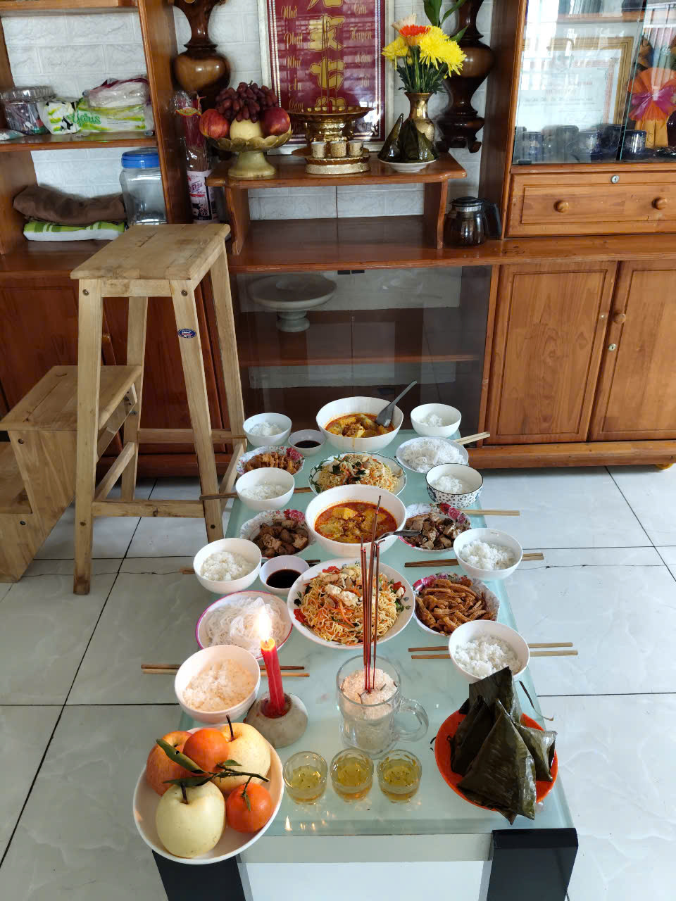
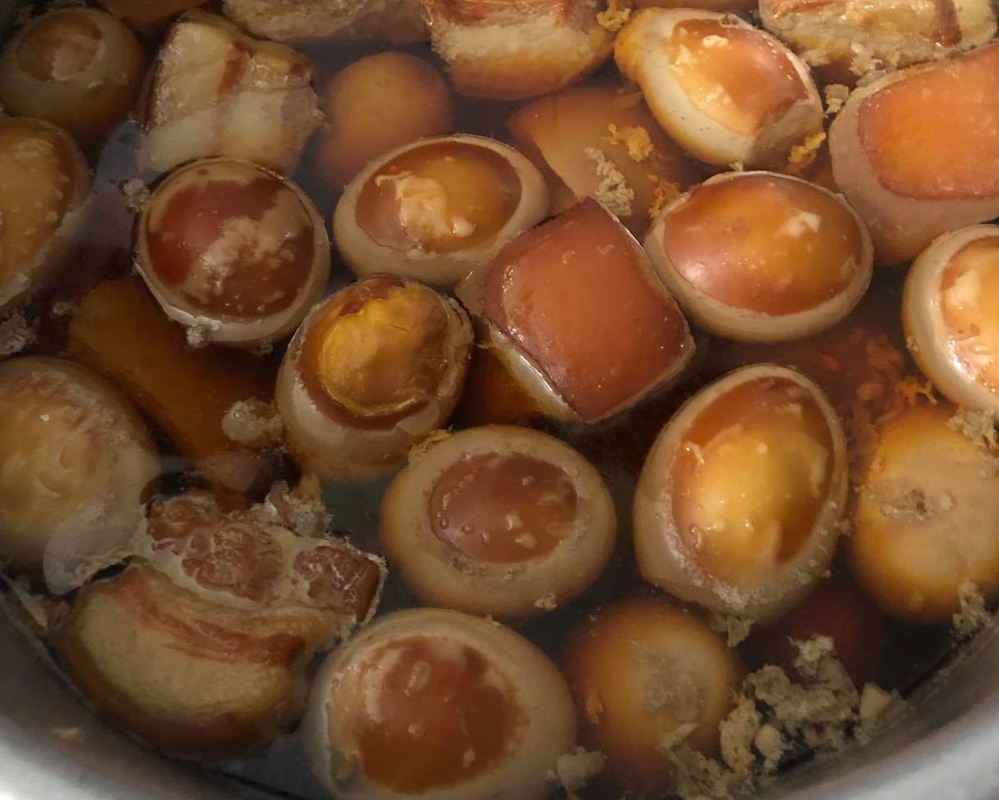
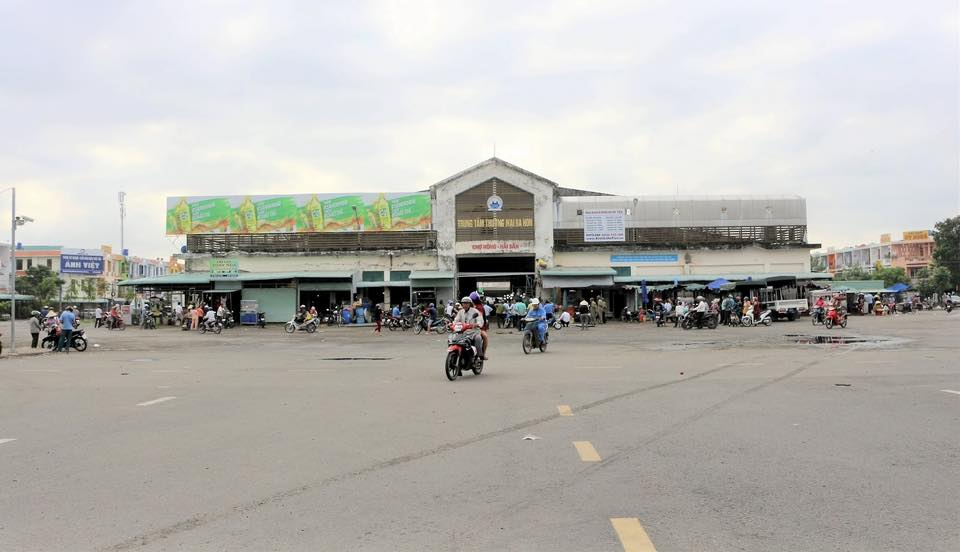
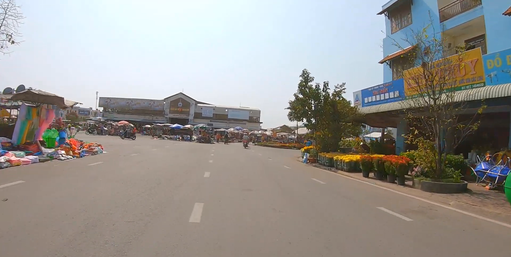
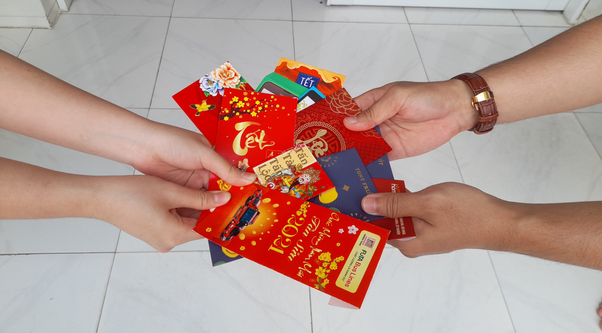
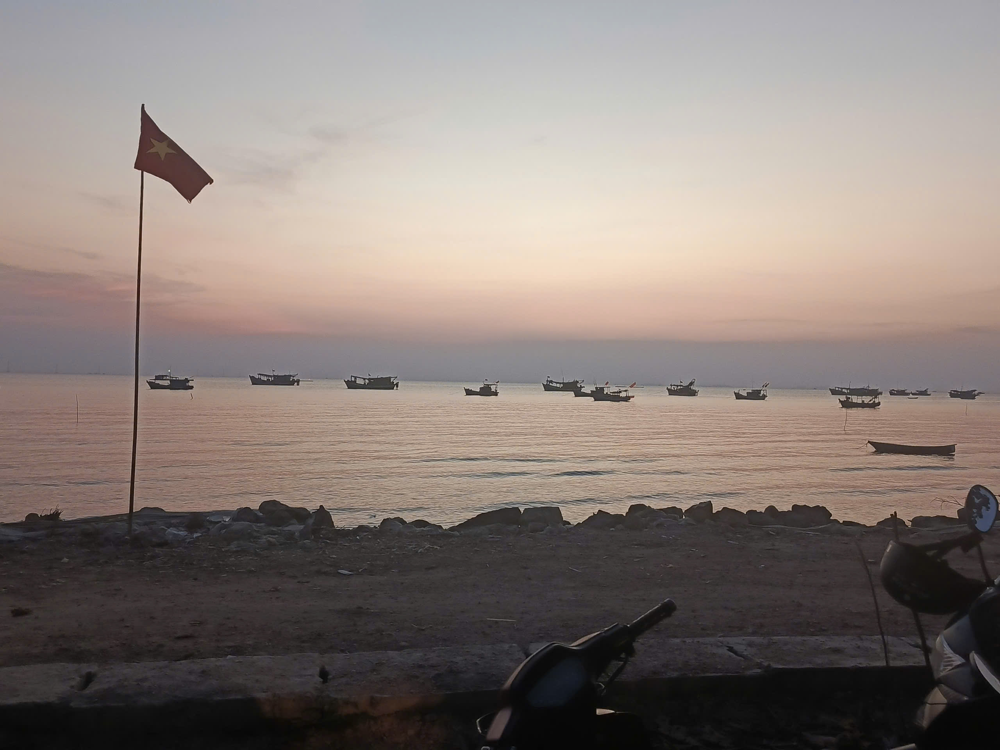

Chào mừng bạn đến với Tết Kiên Lương
Nằm hiền hòa tại tỉnh An Giang, xã Kiên Lương huyện Kiên Lương luôn mang trong mình vẻ đẹp bình dị của vùng sông nước miền Tây. Mỗi độ Tết đến xuân về, nơi đây lại thay màu áo mới đỏ rực rỡ, xanh ngắt mùi lá chuối gói bánh và nồng hậu tiếng cười làng xóm.
"Tết ở Kiên Lương không chỉ có bánh tét mà còn có… tiếng cười vang cả xóm!"
Khám phá ngày Tết


Ẩm thực đặc sắc
Hương vị thịt kho hột vịt, khổ qua rừng và các loại mứt thủ công thơm lừng.
Thưởng thức ngay
Khoảnh khắc Xuân



Ký ức Tết quê
"Dù đi đâu xa, Tết vẫn là con đường ngắn nhất để trở về với gia đình, với những đòn bánh tét đậm đà vị quê Kiên Lương."